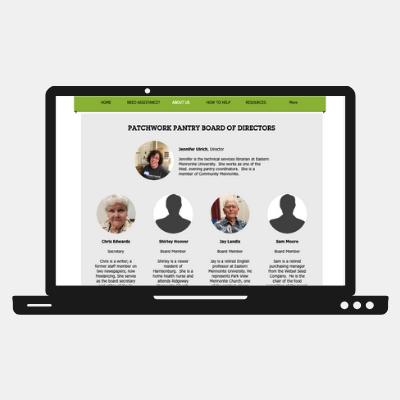
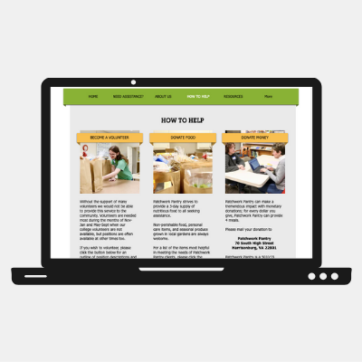
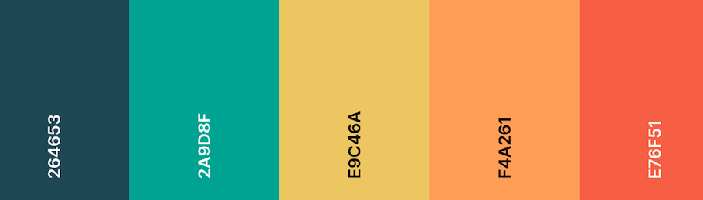

The Task
Patchwork Pantry is a nonprofit in the Harrisonburg, VA community which aims to provide days worth of staple food to those in need within the surrounding county. To increase the organization’s online presence and outreach, I took on the task of redesigning the existing website.
The Original
The existing website lacked a color scheme other than bright colors and did not have an established brandguide. I wanted to work off of the original design and keep the bright colors while refining the organization’s image.
While the font choice offered legibility, the information was appealing as it was cluttered. The website already had a lot of interesting, relevant information but could benefit from a more coherent layout.

With any nonprofit organization, transparency is key to receiving donations. One of the primary requests from the Patchwork Pantry’s Board of Directors was to update the staff page of the website.
Some staff members lacked images or descriptions. To offer consistency, updating all staff member profiles was a must for this redesign project.

The existing website offered an abundance of information regarding to how to get involved with the organization. While this is important information for any nonprofit to display, the layout could once again be improved to limit the amount of text displayed at one time.
The Results
For my redesign, I focused on providing a responsive layout as well as further branding with a refined color scheme. I brainstormed and constructed multiple potential style guides and reported them to board members of the organizaiton. Ultimately the choice was made to withhold the design of a logo until a later date. Changes were made to the color palette, fonttypes, and layout. Content was also updated. Stock photos are being used in place of employee photos in the redesign both for privacy purposes as well as a delay in receiving updated photos.
The chosen color palette is shown below.

The redesign has been approved by the organization and is now in the process of being coded. The website should be implemented by summer 2021. Check out some of the redesign mockups!